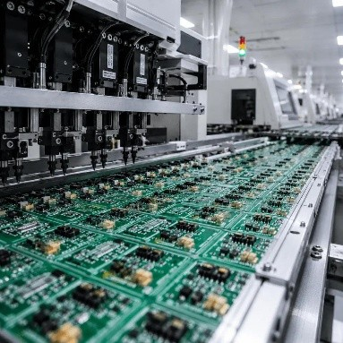
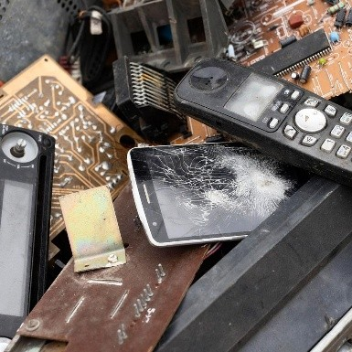
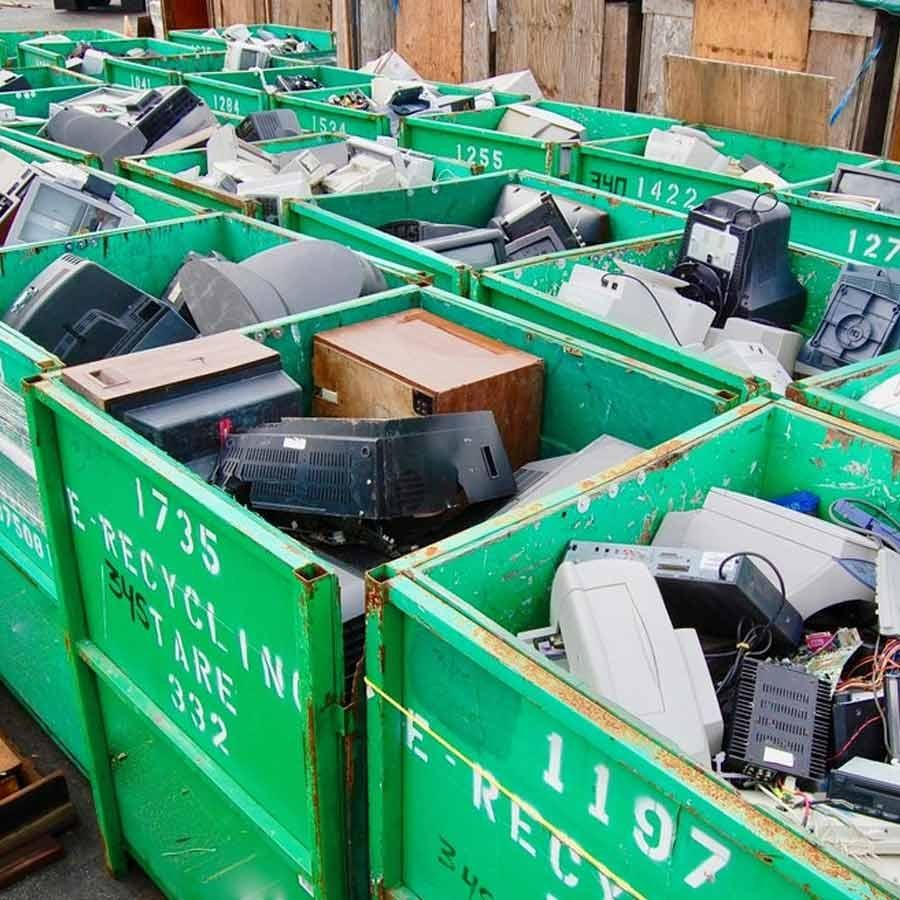
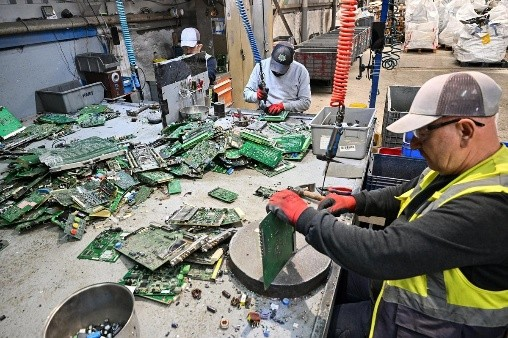
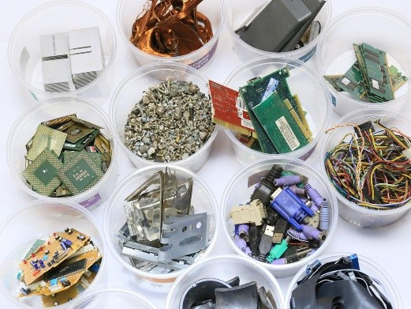

Definición
¿Qué es el ciclo de vida de los residuos electrónicos?
El ciclo de vida de los residuos electrónicos es el conjunto de etapas por las que pasan los aparatos electrónicos desde que se fabrican y utilizan hasta que dejan de funcionar y se convierten en residuos, para ser reutilizados, reciclados o eliminados de manera segura.
Por ejemplo: celulares, computadoras, televisores, tablets, baterías y electrodomésticos.
Etapas del ciclo de vida de los residuos electrónicos
Se utilizan materias primas como plástico, vidrio y metales para fabricar aparatos electrónicos.

Las personas utilizan los aparatos para comunicarse, estudiar, trabajar y entretenerse.
Cuando los aparatos se malogran o quedan obsoletos, se convierten en residuos electrónicos.

Los residuos se recogen y separan según su tipo y sus materiales.

Se recuperan materiales como cobre, aluminio, oro y plástico para fabricar nuevos productos.

Los aparatos que todavía sirven pueden repararse o reutilizarse. Los materiales peligrosos reciben un tratamiento especial.

¿Por qué es importante?
- Reduce la contaminación del suelo, el agua y el aire.
- Evita que sustancias tóxicas dañen la salud.
- Permite recuperar materiales valiosos.
- Disminuye la cantidad de basura electrónica.
- Protege el medio ambiente y los recursos naturales.